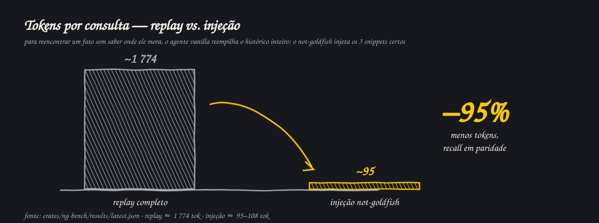
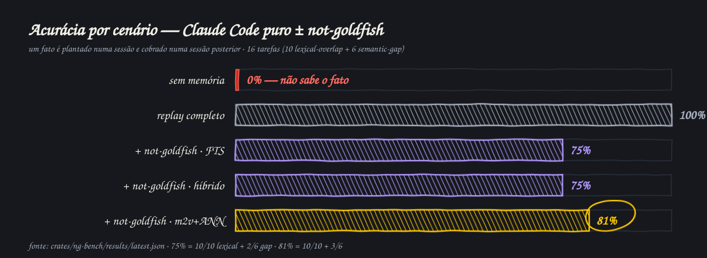
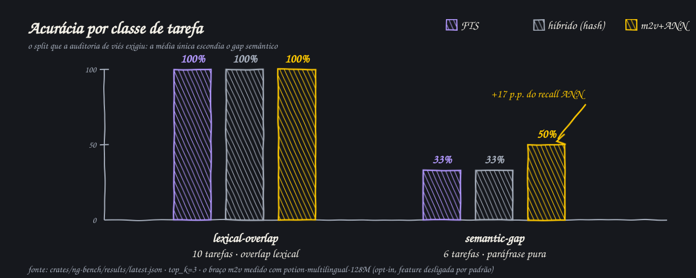
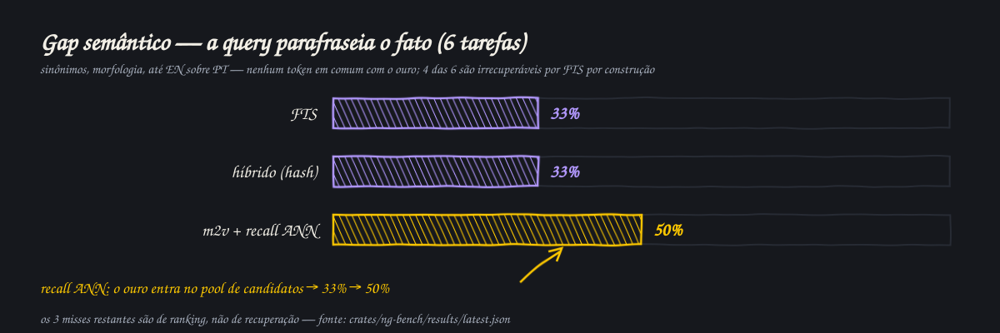
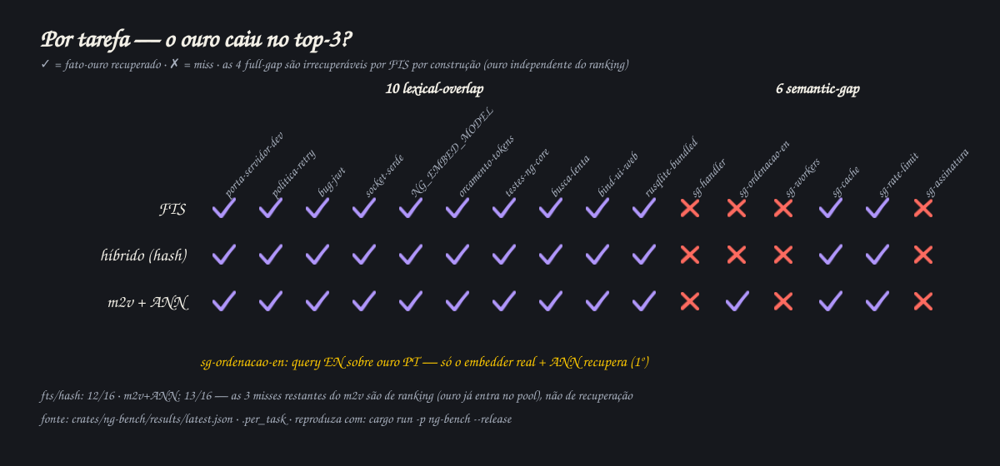

Estudo offline, determinístico e reprodutível (estilo LoCoMo/mem0): um fato é plantado numa sessão e cobrado numa sessão posterior. 16 tarefas em duas classes — 10 lexical-overlap, 6 semantic-gap — sobre 72 eventos. Claude Code puro vs. Claude Code puro + not-goldfish, sem nenhuma outra ferramenta no circuito.
Sem memória o agente erra (0%). Reler o histórico inteiro acerta, mas custa ~1 774 tokens por consulta. A injeção entrega o mesmo fato em ~95–108 tokens.

O resultado global (16 tarefas): a injeção empata em recall com o replay na classe lexical e o embedder real + ANN entrega a melhor acurácia geral.

A média única escondia o ponto fraco. Separadas as classes: o FTS vence onde a query reusa as palavras do fato; no gap semântico, só o embedder real move o ponteiro.

| lexical-overlap (10) | acc | MRR | inj. tok | econ. on-found | grounded |
|---|---|---|---|---|---|
| SEM — full-context replay | 100% | 1,00 | 1 773 | base | 100% |
| COM — FTS | 100% | 0,90 | 108 | 93,9% | 100% |
| COM — híbrido (hash) | 100% | 0,90 | 101 | 94,3% | 100% |
| COM — m2v + recall ANN | 100% | 0,85 | 102 | 94,3% | 100% |
| semantic-gap (6) | acc | MRR | inj. tok | econ. on-found | grounded |
|---|---|---|---|---|---|
| SEM — full-context replay | 100% | 1,00 | 1 774 | base | 100% |
| COM — FTS | 33% | 0,33 | 73 | 94,8%* | 33% |
| COM — híbrido (hash) | 33% | 0,33 | 69 | 94,8%* | 33% |
| COM — m2v + recall ANN | 50% | 0,50 | 86 | 94,2%* | 50% |
A auditoria provou que nenhum embedder ajudava no desenho rerank-only — o cosseno só reordenava o que o FTS já achou. O recall ANN (top-50 por cosseno fundido ao pool FTS) destravou o gap:

Cada tarefa, cada braço: onde o ouro cai no top-3. As 4 full-gap são irrecuperáveis por FTS por construção — a prova de que o ouro não foi definido por recuperabilidade.

A economia exata depende do tamanho do histórico. 94,7% é função do corpus (~1 774 tok de replay); o robusto é a ordem de grandeza (injeção limitada ≪ replay total), não o dígito.
Contra um oráculo que já sabe onde o fato está, a economia some (FTS −12%): se a localização é óbvia, injetar 3 snippets custa mais que reler a sessão certa (~84 tok).
50% é o teto deste embedder no gap. Varredura de tuning (pesos, pools, normalização) congela em 50%/0,50 — os 3 misses são Pareto-dominados no cosseno. A alavanca restante é um modelo mais forte, não mais tuning.
O opt-in semântico custa: ~507 MB em disco e ~1,3 GB de RSS extra —
por isso a feature model2vec segue desligada por padrão (embeddings rodam no worker do ngd, nunca no hook de <5ms).
precision@3 = 0,33 é teto aritmético (1 fato-ouro, k=3), não fraqueza de ranking.
crates/ng-bench · dados em results/latest.json · corpus fixo, sem Date::now/rand.
Reproduza: cargo run -p ng-bench --release · gates: cargo test -p ng-bench --release
(pisos por classe + anti-bajulação). Metodologia e auditoria completas: with-vs-without.md.